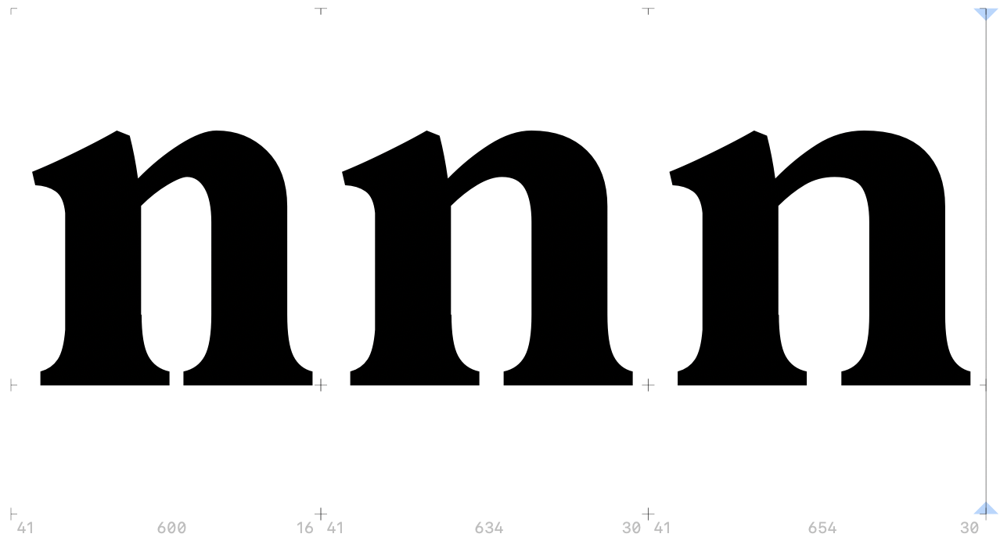

This week we will start the endeavour of lauching your projects and bring first drawings to the screen. If we bring back to memory last weeks questions, we can take first steps into a drawing process. For this we will do the classic type designer’s tricks of starting with lower case letters n and o. This will allow us to make use of modularity, so to compose new letters using shapes of the existing ones. I.e. if you draw your n you almost have your h and m and maybe even a u. However, it is important to not stop it here. The motto is: draw, draw, draw. Don’t be satisfied with the first attempts. First ideas and sketches are almost never your best. And even if they are it’s just upon comparing them againsrt others that you will realise. So keep going.
The case for modularity

Testing different widths of lowercase n.
While drawing your letters keep spacing in mind. Try out different left and right sidebearings. Spacing your font will heavily influence the appearance of your letter shapes. For this you’ll need to test in an application of your choice. A good idea is — once more — to make use of modularity: when you start to space your n, chances are, your m will be spaced likewise because they are both vertical on the left and on the right. So test verticals against verticals by typing strings of n(nnnnnnn). Then do the same for o(oooooo), so rounds on both sides. Then test n against o and the other way around. So test non, ono, etc. Like this you will cover many situations in your font already.
Next: try to test looser and wider spacing. Try to increment and decrement your LSBs and RSBs by units of 2, 4, 8 etc. Export and test in between. Like this you will be able to take a decision on how you want to space your font.
Next: try to test looser and wider spacing. Try to increment and decrement your LSBs and RSBs by units of 2, 4, 8 etc. Export and test in between. Like this you will be able to take a decision on how you want to space your font.
Testing spacing with spacing strings and units of 8.
When in doubt: print!
Although in this course we will primarily focus on type for the screen, printing can sometimes be a good exercise, to evaluate your drawings. Print strategically: try different sizes, words (as soon as possible), spacing strings (your letters between o and n), and text when you have enough letters to render some words. You can use tools like Nina Stössinger’s word-o-mat to create testwords that incoporate the charcters you currently have in your font.
Before working on all characters at once try to get the proportions, spacing and feel of some key characters right. So for no stick to n and o and its derivates.
Before working on all characters at once try to get the proportions, spacing and feel of some key characters right. So for no stick to n and o and its derivates.
Tracking changes
As a closing note: it can be a good idea to start to think about how you want to manage your files and data. I recommend to start using a version manager like git. Git allows you to track every file you save and leave a little commit note which is like a diary entry where you can note what you changed and did. This can be handy to go back to previous versions of your files to compare and see what changed or what works better. This works best with open file formats like .glphs or .ufo files.
You can also link up your files to an online service like GitHub or GitLab to store your files online and make them acessible via multiple machines.
You can also link up your files to an online service like GitHub or GitLab to store your files online and make them acessible via multiple machines.